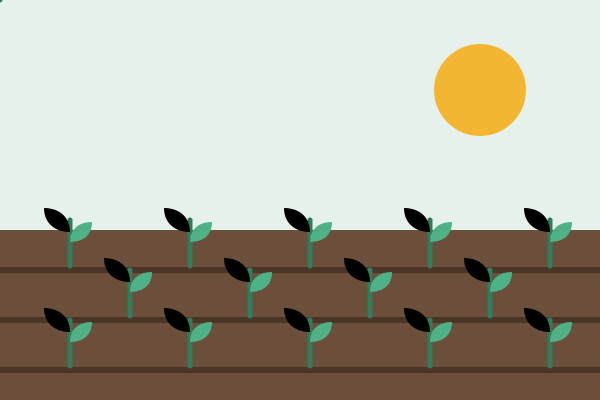

Doe
Qualquer valor vira sementes, ferramentas e cestas. Você escolhe se quer doar uma vez ou todo mês.
Cadastrar como doadorPlantamos hortas nos bairros, ensinamos a cozinhar com o que se tem e entregamos cestas para famílias que passam dificuldade. Tudo isso com a ajuda de gente como você.
O Instituto Raiz Viva é uma organização da sociedade civil sem fins lucrativos. Nasceu de um mutirão de vizinhos que transformou um terreno abandonado em horta e hoje atua em vários bairros da cidade.
Acreditamos que alimentação de qualidade é um direito e que comunidade organizada muda a realidade.

Números fictícios, usados como exemplo neste trabalho acadêmico.
Qualquer valor vira sementes, ferramentas e cestas. Você escolhe se quer doar uma vez ou todo mês.
Cadastrar como doadorAjude no plantio, nas oficinas, na organização das entregas ou na comunicação. Você define o tempo que tem.
Cadastrar como voluntárioVeja onde atuamos, quem atendemos e como cada iniciativa funciona.
Ver projetos sociais